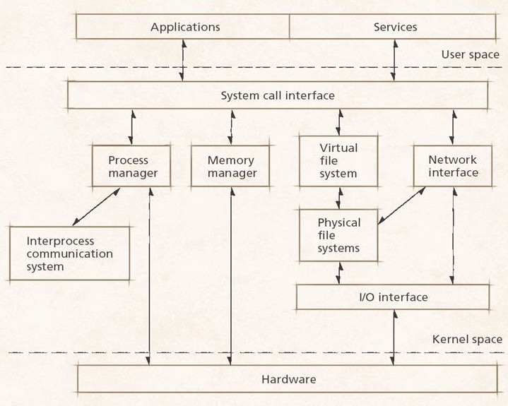
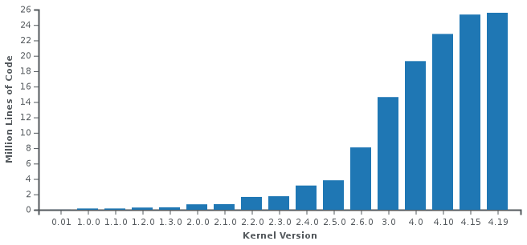

Linux Kernel
See also How to find kernel version?
Intro
The Linux kernel is/has/supports:
- a monolithic kernel,
- true preemptive multitasking (both in user mode and, since v2.6, in kernel mode),
- virtual memory,
- shared libraries,
- demand loading,
- shared copy-on-write executables (via KSM, kernel same-page merging),
- memory management,
- the Internet protocol suite,
- multithreading;
Here is a very simplified diagram of the Linux architecture:
Device drivers and kernel extensions run in kernel space (ring 0 in many CPU architectures), with full access to the hardware, although some exceptions run in user space, e.g., filesystems based on FUSE/CUSE, and parts of UIO. The graphics system most people use with Linux does not run within the kernel, in contrast to that found in Microsoft Windows. Unlike standard old-style monolithic kernels, Linux device drivers are easily configured as modules, and loaded or unloaded while the system is running. Also, unlike standard monolithic kernels, device drivers can be pre-empted under certain conditions; this feature was added to handle hardware interrupts correctly, and to better support symmetric multiprocessing. By choice, the Linux kernel has no binary kernel interface.
The hardware is also incorporated into the file hierarchy. Device drivers interface to user apps via an entry in the /dev or /sys, process info is mapped to the filesystem through the /proc dir.
See Linux kernel map for more details.
{kind=link}
The following diagram shows how the Linux kernel was growing in size from version to version.
See Linux kernel timeline to find relation between years and versions.
{kind=link}
KSM
kernel same-page merging (aka kernel shared memory and memory merging) is (since version 2.6.32) a kernel feature that allows a hypervisor system to share identical mem pages amongst different processes or virtualized guests. While not directly linked, Kernel-based Virtual Machine (KVM) can use KSM to merge memory pages occupied by virtual machines.
KSM performs the memory sharing by scanning main memory and finding duplicate pages. Each detected duplicate pair is then merged into a single page, and mapped into both original locations. The page is also marked as COW (copy-on-write); kernel auto makes a copy of such page if a process tries to modify it.
Kernel-to-userspace API
Source code portability ensures that a C program written by conforming to a standard can be successfully compiled and run on any system that also conforms to the same standard. The relevant standards, aiming to achieve source code portability of programs, that the development of the Linux kernel, the GNU C Library, and associated utilities tries to adhere to, are POSIX and the Single UNIX Specification. However, as of February 2014, no Linux distributions are branded as "UNIX" by The Open Group, mainly because of the costs of the conformance testing. The Linux kernel API of the Linux kernel, representing the kernel's system call interface, is composed of the available system calls.
Kernel-to-userspace ABI
Binary portability shall guarantee that any program once compiled for a given hardware platform, can be run in its compiled form on any other hardware platform that conforms to the standard. Binary portability is an essential requirement for the commercial viability of independent software vendor (ISV) applications built for the operating systems based on the Linux kernel. Binary compatibility is much more demanding than source code portability; as of February 2014, the only standard concerning itself with binary compatibility is the Linux Standard Base (LSB).
In-kernel API
There are a couple of kernel internal APIs utilized between the different subsystems and subsystems of subsystems. Some of them have been kept stable over several releases, other have not. There are no guarantees regarding the in-kernel APIs. Maintainers and contributors are free to augment or change them at any time.
Examples of in-kernel APIs include software frameworks/APIs for the following classes of device drivers:
- Video4Linux - for video capture hardware;
- Advanced Linux Sound Architecture - for sound cards;
- New API - for network interface controllers;
- Direct Rendering Manager - for graphics accelerators;
- KMS driver - for display controllers;
- mac80211 - for wireless network interface controllers;
- WEXT - for wireless network interface controllers (obsolete);
In-kernel ABI
Strong interests in defining and maintaining a stable in-kernel ABI over several releases have been voiced repeatedly over time by parties, e.g. hardware manufactures, writing proprietary kernel modules and distributing binary-only software, e.g. device drivers.
By explicit choice the Linux kernel does not maintain a stable in-kernel ABI. The reasons are purely technical and not philosophical. Due to the absence of an in-kernel ABI that has to be kept stable over releases, the Linux kernel can keep a much higher rate of development.
(see more in Wikipedia)
Slabs
(since Linux Kernel 2.4)
In Linux kernel frequently used objects (buffer heads, inodes, etc) have their own caches - slabs. Slab is a mem cache for identical objects that are uniform in size and are allocated and released many times during the life of the kernel.
Technically, a slab is a set of one or more contiguous pages of memory set aside by the slab allocator for an individual cache. This memory is further divided into equal segments of the size of the object type that this cache is managing.
To see what exactly is kept in those slabs, try:
sudo cat /proc/slabinfo
or
sudo vmstat -m
(the last cmd outputs less info, but easier to read)
In the past these objects were created and released with kmalloc() and kfree() kernel calls. However, it was very inefficient solution, and since version 2.4 Linux kernel implements a caching memory allocator (slab allocator) which manages individual caches (slabs) of identical objects on behalf of kernel modules and drivers.
Kernel from source
(Outdated)
Assumptions: 2.6.x kernel and 2.6.x.x patches; user is root. Download kernel source and latest patch from the nearest mirror of www.kernel.org. Optionally, check the archive's digital signature:
gpgv linux-2.6.28.bz2.sign linux-2.6.28.bz2
You must have the corresponding public key: download it from
wwwkeys.pgp.net, import (see
gpg --import) and copy pubring.gpg to
trustedkeys.gpg.
Copy archive to /usr/src/kernels (default location), unpack:
tar jxvf linux-2.6.28.tar.bz2
Check ownership (must be root.root). Create a symlink:
ln -s linux-2.6.28 linux
If you have a fresh patch, copy it to /usr/src/kernels:
cd linux
gzip –cd ../patch-2.6.28.5.gz | patch –p1
or
bzip2 –dc ../patch-2.6.28.5.bz2 | patch –p1
Note that patches with 4-part version numbers (2.6.x.x) are cummulative, so you must have a basic kernel version (2.6.x) and the latest patch. The following cmd is required after patching only:
make mrproper
(it cleans the kernel source dir and removes .config). Now, go to /usr/src/kernels/linux and do the most complicated part - kernel configuration. To save time, get some reliable config file from the latest (nearest) kernel available (search in /boot; or install the latest binary kernel for your distribution; alternatively, you can use your own old config). Copy it to /usr/src/kernels/linux, rename to .config, check mode / ownership (644/root.root), and upgrade:
make oldconfig
Now, you can start kernel configuration:
make menuconfig (ncurses-based / text mode and X11)
make xconfig (QT-based / X11)
make gconfig (GTK-based / X11)
make config (old-style, inconvenient)
When config is done, build new kernel:
make all
It takes time and system resources. On success continue with:
make modules_install
And, finally:
make install
The last cmd installs a new kernel, makes changes to grub.conf, etc. If kernel is good, save .config for future use.